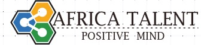

    <mat-sidenav-container>
    <mat-sidenav mode="side" #sidenav opened position="start" fixedInViewport="true">
    </mat-sidenav>
    <mat-sidenav-content>
      <mat-toolbar color="primary" class="position-fixed">
        <button mat-icon-button (click)="sidenav.toggle()">
          <mat-icon>menu</mat-icon>
        </button>
        <a routerLink="/accueil">
        
      </a>
        <span class="toolbar-spacer"></span>
        <div fxLayout="row" fxLayoutAlign="end" >
            <a mat-button routerLinkActive="active" fxFlex="auto" routerLink="Entreprise">Entreprise</a>
            <a mat-button routerLinkActive="active" fxFlex="auto" routerLink="auth/inscription" *ngIf="!isAuth">Trouver un emploi</a>
            <a mat-button routerLinkActive="active" fxFlex="auto" routerLink="auth/connexion" *ngIf="!isAuth">Connexion</a>
            <a mat-button fxFlex="auto" (click)="deconnexion()" style="cursor:pointer"  *ngIf="isAuth">Déconnexion</a>
            <a mat-button fxFlex="auto"  style="cursor:pointer"  *ngIf="isAuth">{{email}}</a>
        </div>
      </mat-toolbar>
      <router-outlet></router-outlet>
    </mat-sidenav-content>
  </mat-sidenav-container>
  


  
        
   